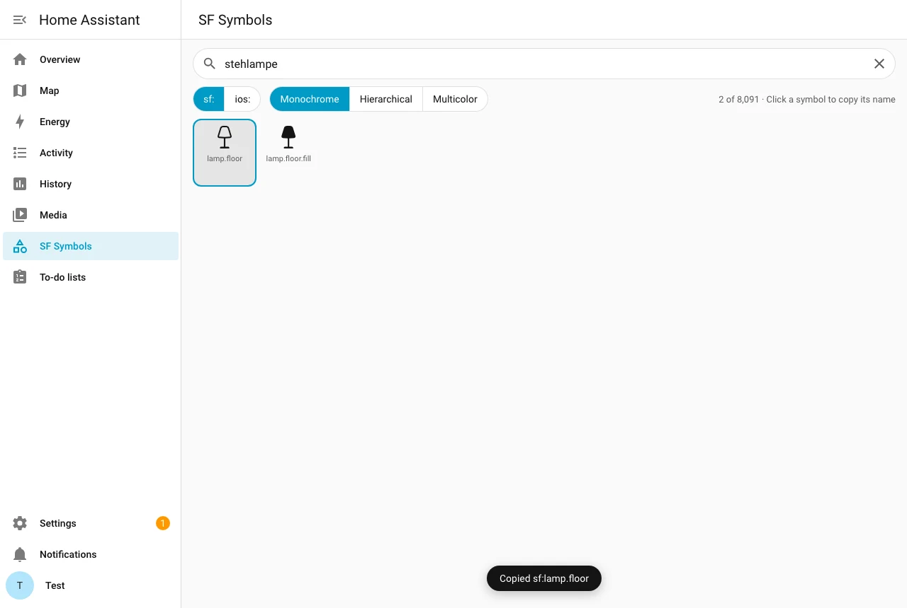
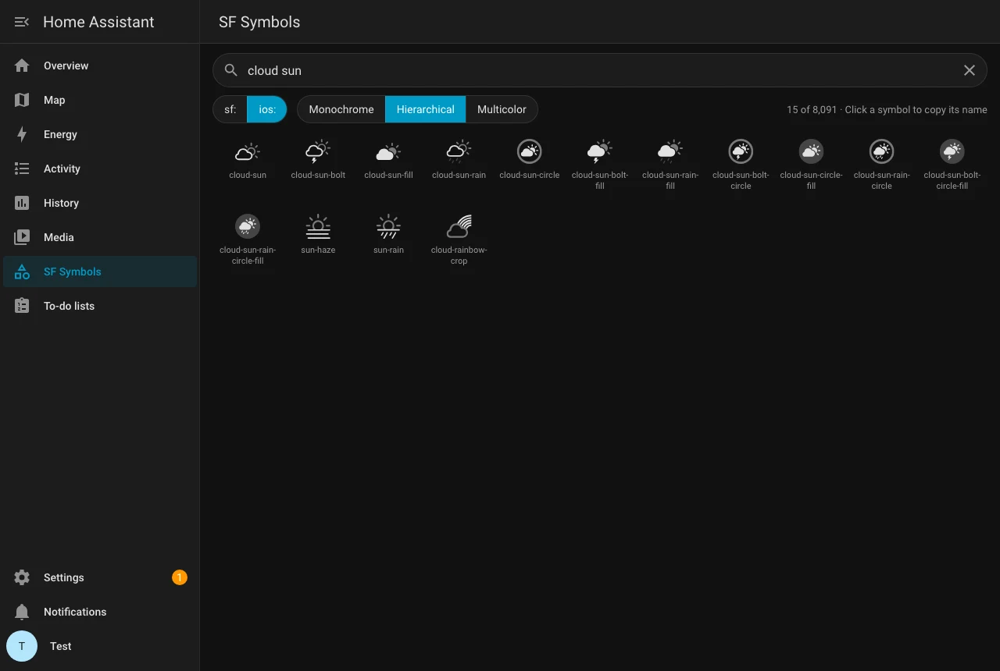
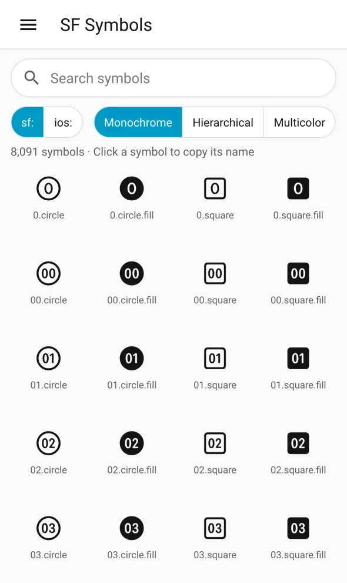
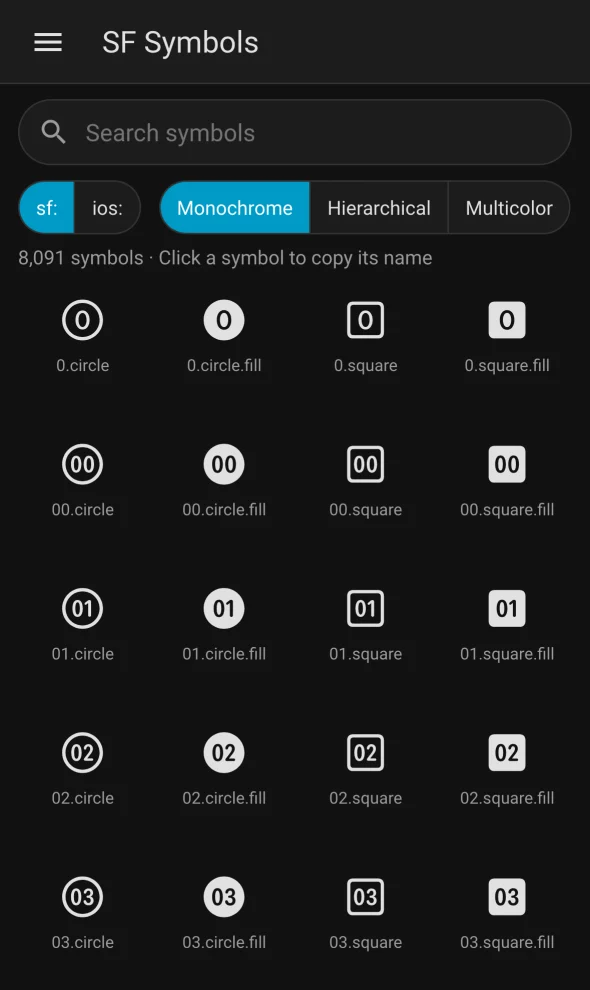

Apple’s SF Symbols as icons for entities, dashboards and cards: sf: with Apple’s names, ios: compatible with Cupertino Icons. Hierarchical and multicolor variants, search in English and German, and a symbol browser in the sidebar.
What it does
Use them wherever Home Assistant takes an icon. Existing Cupertino icons keep working without touching a dashboard, an entity or a Casora setting.
sf: Apple’s namesExactly as in the SF Symbols app, plus a variant if you like.
icon: sf:lightbulb.max icon: sf:lamp.floor icon: sf:cloud.sun.fill#multicolor
ios: like Cupertino IconsCupertino’s spelling with dashes. SF Symbols replaces Cupertino Icons and knows all 6,945 names.
icon: ios:lamp-floor icon: ios:cloud-sun-fill icon: ios:house#hierarchical
sf: | ios: | |
|---|---|---|
| Names | Apple’s, e.g. sf:lamp.floor | Cupertino’s, e.g. ios:lamp-floor |
| Symbols | all 9,524; renamed Apple symbols resolve through Apple’s alias tables | every Cupertino Icons 5.0.1 name (6,945) |
| Frame | one square for all, like MDI, so symbols line up with MDI icons | tight, like Cupertino |
| Found in the picker by | name, Apple’s keywords and categories, German terms | name |
Variants #hierarchical, #multicolor | ✓ | ✓ |
| Best for | new icons | dashboards that already use Cupertino |
Append #hierarchical (#h) or #multicolor (#m). 6,440 symbols have hierarchical layers, 2,749 have multicolor; the rest stay monochrome.
Apple’s keywords and categories plus German smart home terms such as Stehlampe or Rollladen. “floor lamp” finds lamp.floor.
Outlines come in 256 small gzip chunks, loaded on demand and cached for a year. The URLs carry a version, so an update reaches every browser at once.
The loader module is public, the symbol data is only served with a Home Assistant login, also in the Companion app.
White parts of multicolor symbols use the text colour, so they stay visible in light themes. Set --sf-symbols-white: #ffffff for Apple’s original white.
New in 26.11
A page in the sidebar for administrators. Search every symbol in English and German, switch between sf: and ios: and the three variants, click a symbol to copy its name, e.g. sf:cloud.sun.fill#multicolor. Follows the light and dark theme and works on phones.

lamp.floor, one click copies it.
ios: names with the hierarchical variant, in the dark theme.

Renders only the visible rows, so it stays quick with thousands of symbols. Turn it off in the integration options if you do not need it; icons keep working.
Install
Search, download, add.
If icons stay empty, reload a second time: the browser may still have the old page cached.
Nothing breaks on the way.
While Cupertino Icons is still installed, a repair notice asks you to remove it. Until then SF Symbols keeps the ios: prefix working. The variants #hierarchical and #multicolor only work once Cupertino Icons is gone, because its own module still draws those suffixes its way.
Copy custom_components/sf_symbols from the latest release into /config/custom_components/, restart Home Assistant and add the integration. To hide the symbol browser: Settings, Devices & services, SF Symbols, Configure.
Good to know
Reload the browser, if needed twice because of the cache, and check that the integration is set up. The symbol data needs a login: on the login page or with an expired session icons stay empty until you are logged in.
Remove Cupertino Icons. Symbols without a hierarchical or multicolor version stay monochrome, as do Cupertino’s own suffixes #color, #invert and #fullcolor.
It is only shown to administrators and can be turned off in the integration options. After an update, reload the browser.
Home Assistant lists every icon set, so each symbol shows up as ios: and sf:. Search terms are attached to sf: only, so a search shows each symbol once.
Variable values (such as wifi at 50 %), animations and gradients. Apple’s brand symbols (Apple logo, product marks) are not included.
It is generated on a Mac from Apple’s SF Symbols app with tools/build_icons.py, nothing is downloaded at runtime. See How it works in the README.
Open a GitHub issue, ideally with the diagnostics (integration page, three dot menu, Download diagnostics).
The code is licensed under the MIT License. The symbol data in custom_components/sf_symbols/data/ is generated from Apple’s SF Symbols app. SF Symbols are the property of Apple Inc. and are subject to Apple’s license terms; they are not covered by the MIT License.
SF Symbols
Two prefixes, three variants, one symbol browser.